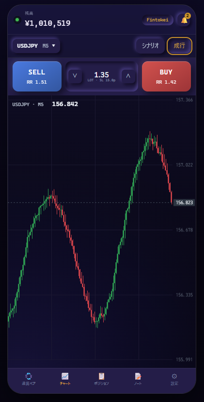

Web版YTT 導入方法
導入方法
口座の登録からレシーバーの設置、Web版YTTへのログインまで。
所要時間の目安は約15分です。
導入方法
口座の登録からレシーバーの設置、Web版YTTへのログインまで。
所要時間の目安は約15分です。
利用規約 ※必ず目を通してください
Web版YTTの機能説明はこちら ↓
最終更新日：2026.9/10
ブラウザで動くYTTです。スマホからでもPCからでも、取引ツール（MT4 / MT5 / cTrader）にレシーバーEAを入れておけば、Web版YTTからシナリオ構築・注文・決済ができます。
注文を実際に出すのはレシーバー側なので、MT4 / MT5 は利用中もPCを起動しておく必要があります（cTrader Cloud版はPCを閉じてもOK）。

| 対応端末 | スマホ（iPhone / Android）、PC。ブラウザで開きます |
|---|---|
| ブラウザ | Safari / Chrome など。スマホは Androidはインストール、iPhoneはホーム画面に追加して使うのがおすすめ（下の「スマホはアプリのように使う」を参照） |
| レシーバーEAを入れる取引ツール | MT4 / MT5 / cTrader / cTrader Cloud（1口座につき1つ） |
| 通信環境 | 安定した高速インターネット回線 |
| 使用可能者 | メンバーシップ or サブスク加入者 |
| 使用可能証券会社、プロップファーム | HFM、Axiory、ThreeTrader、Fundora、Fintokei、Funded7、楽天証券 （他証券会社、他プロップファームでの動作はテストしていません） |
詳細な機能解説は Web版YTT 使い方ページ（準備中） で行っています。

お使いの証券会社・プロップファームで口座開設後、それぞれのHPよりMT4をダウンロードします。MT4を開き、口座開設後にメールで届いた口座情報でログインします。
MT4左上の「ファイル」→「取引口座にログイン」

ログインID・パスワード・サーバーを入力して「ログイン」

ログインすると、MT4左上に口座番号が表示されます（ログインID＝MT4口座番号）。

ブラウザが立ち上がるので、口座番号を入力して「登録」

表示された32文字の認証コードを控える
このコードは STEP 2 のレシーバー設定で入力します。メモ帳などに控えておいてください。

zipファイルを解凍する
解凍すると、取引ツールごとのフォルダが入っています。お使いの取引ツールのフォルダだけ使います。

MT4フォルダの中身は次の2つです。

MT4を開き、「ファイル」→「データフォルダを開く」

フォルダ中の「MQL4」→「Experts」へと進む


その中に「YTT_OrderEA.ex4」を移す（もしくはコピー＆ペーストする）

戻って、フォルダ中の「MQL4」→「Libraries」へと進む

その中に「YTT_OrderReceiver.dll」を移す（もしくはコピー＆ペーストする）

MT4右上の「×」で閉じ、もう一度MT4を立ち上げる

MT4を開き、左上にある気配値表示のアイコンをクリック
MT4左側に気配値表示（通貨ペア名が並ぶ）が表示されます。
気配値表示上で右クリック →「すべて表示」

灰色ではなく黒色の通貨ペア名の中から、1つだけ通貨ペアを選びます。
通貨ペア名をMT4右側の空間にドラッグ＆ドロップ

下の画像のようにチャートが表示されます。

MT4左上にあるナビゲーターのアイコンをクリック
「エキスパートアドバイザ」の左にある「＋」をクリック

前の段階で Experts フォルダに入れたファイル名が表示されます（YTT_OrderEA）。
「YTT_OrderEA」を右クリック →「チャートに表示」

「全般」タブ →「自動売買を許可する」にチェック →「DLLの使用を許可する」にチェック

「パラメーターの入力」タブで、認証コードなどを入力して「OK」

入力するのは必須設定の2つだけです。
| 口座登録画面に表示される連携コード（32文字）を貼り付ける | STEP 1 で控えた32文字の認証コードを貼り付けます |
|---|---|
| 通貨ペア名末尾サフィックス | 通貨ペア名の末尾に文字が付いている口座では、その文字を入力します。 例：Fintokei の USDJPYp → p ／ HFMプロ口座の USDJPYr → rサフィックスが無い口座は空欄のままでOK |
XAUUSD の欄に GOLD）。空欄のときは XAUUSD や USOIL のような標準の名称が使われるので、同じ名前なら空欄でOKです。入力できたら「OK」を押します。
MT4左上にある「自動売買」をクリック

認証に成功したら、MT4を再起動する
「初期設定が完了したので再起動してください」という案内が表示されます。案内に従って、MT4右上の「×」で閉じ、もう一度立ち上げてください。
再起動後、レシーバーの表示が「承認待ち（webyttで端末を承認してください）」になれば STEP 2 は完了です。

Web版YTTにアクセスする
「Discord認証」ボタンを押してログインする
ログインしていない状態でアクセスすると、下の画面が表示されます。「Discordでログイン」を押してください。

「口座を選択」画面で、承認した口座を選んで「確定」
ログインすると「口座を選択」が表示されます。

数秒待って、接続状態を確認する
口座番号の左にある丸の色が接続状態を表します。
| 緑 | 正常に接続されています。そのまま利用できます |
|---|---|
| 黄 | 接続はあるが価格が取れていません。MT4 / MT5 では、取引する通貨ペアを気配値表示欄に出してください |
| 赤 | 接続されていません。ページをリロード。改善しない場合は下の「よくある質問」へ |
ブラウザのまま使うより、ホーム画面に置いておくと、アドレスバーが消えて画面が広く使え、1タップで開けます。
仕様上の制限です。導入後に「動かない」と感じたときは、まずここを確認してください。
コピー元の口座でWeb版YTTからエントリーされたポジションを、自分の口座に写す機能です。オンにすると通常の操作に制限がかかります。
| 新規エントリー | コピー以外の新規エントリーはできません |
|---|---|
| TP / SL の移動 | できません |
| コピーされるポジション | コピー元でWeb版YTTからエントリーされたポジションのみ。他の方法で建てたポジションはコピーされません |
| ロット | 設定内の「コピー時のロット計算モード」が参照されます |
| SLが無いポジション | ロット計算モードが損失率固定・損失額固定の場合、SLが無いポジションはコピーされません（損失を計算できないため） |
| TP / SL | コピーされます。コピー元の価格をそのまま写すのではなく、コピー元と同じTP/SL幅になるように設定されます |
| オンにした後 | Web版の画面は閉じてもOK。ただしレシーバーが入っている取引ツールは起動したままにしてください（PCのスリープにも注意） |
新しいレシーバーEAが配布されたら、ファイルをダウンロードし、「STEP 2 レシーバーEAの設置」の手順をもう一度行ってください。
よくある症状と、確認する順番です。上から順に確認してください。
サポートが必要な場合や不具合だと考えられる場合は、以下の項目をチェックしてください。
以上で解決しなかったものについて、以下の内容を 「お問い合わせ」 に送ってください。